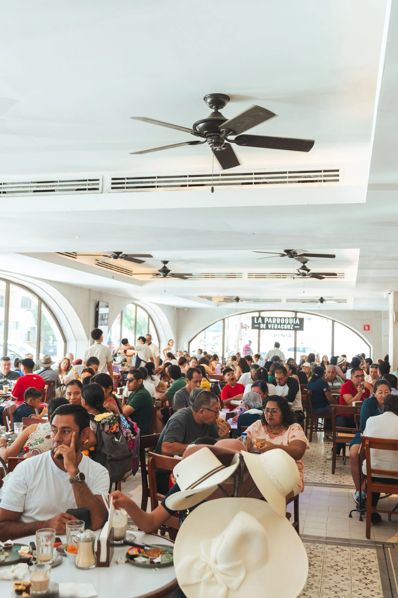
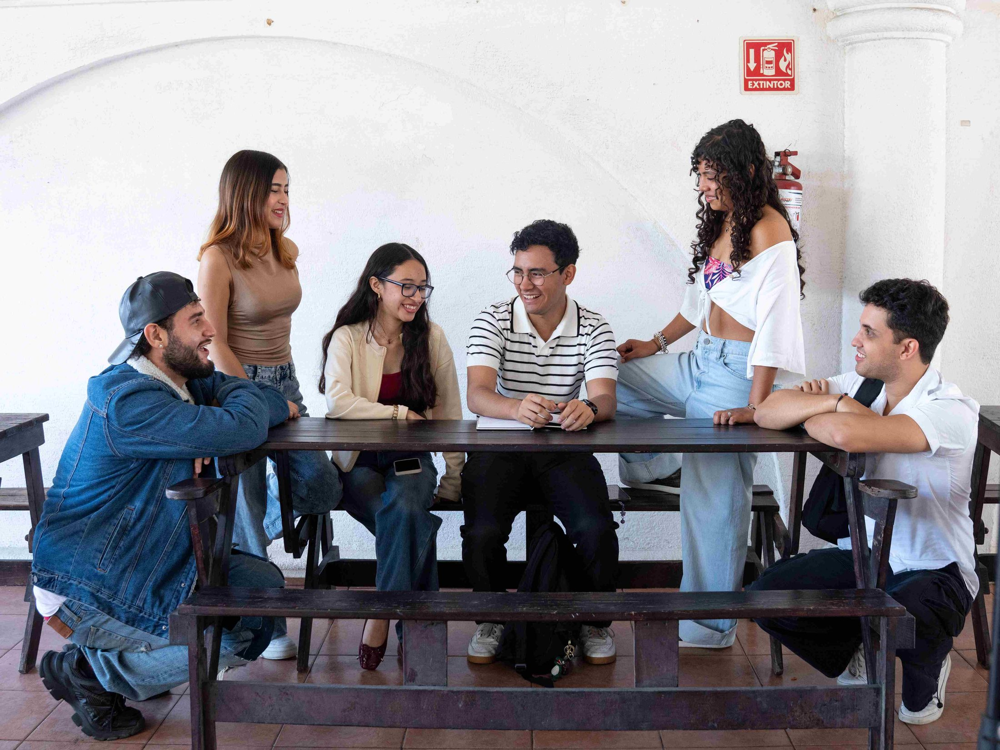
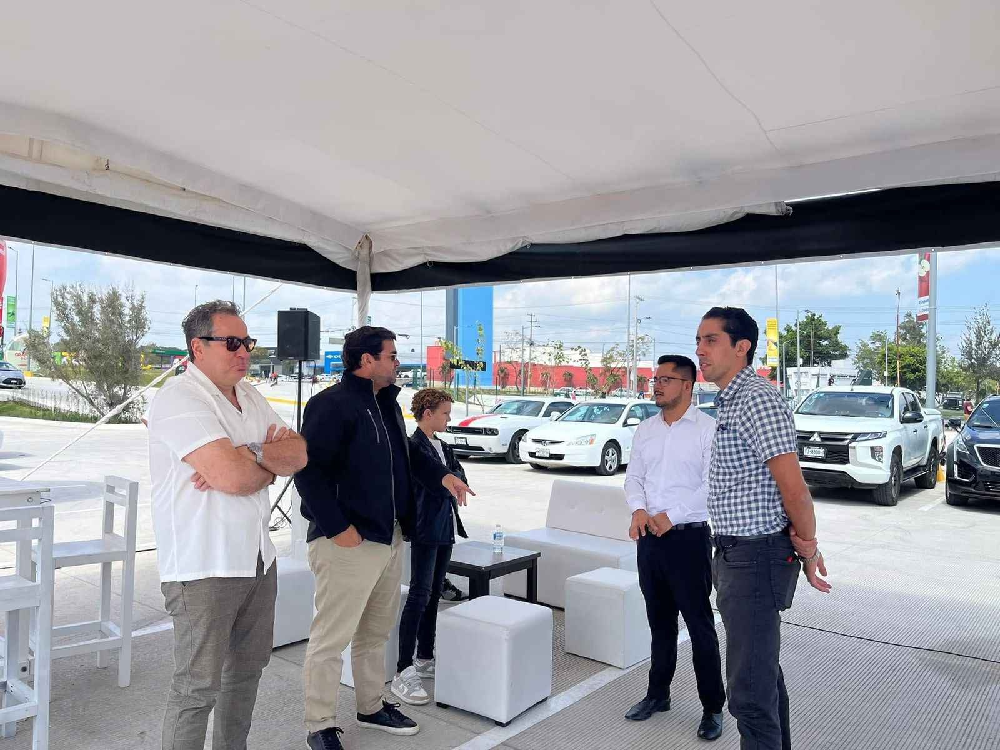
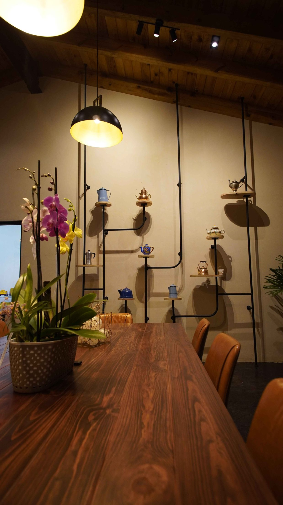
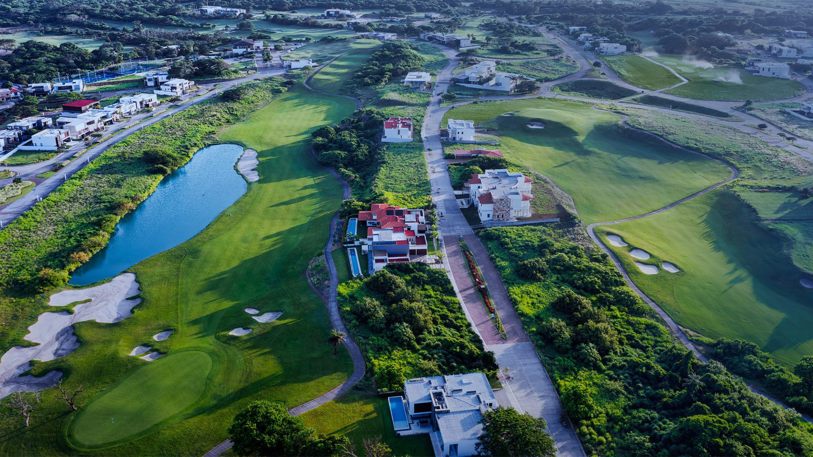

Proyectos
25 años de trabajo que hablan por sí solos.
Exploración de proyectos reales, estrategias comprobadas e impacto medible para marcas en México y Estados Unidos.
-
01
Hospitalidad
The Grand Lounge Elite
Consolidar la red de salas VIP más importante en aeropuertos de México.

-
02
Café y Gastronomía
La Parroquia de Veracruz
Casi 100 años de historia, traducidos a una marca integral.

-
03
Inmobiliario
Bitali Desarrollos
Convertir 60 conversaciones diarias en los leads que realmente importan.

-
04
Hotelería
Camino Real Veracruz
Contenido mensual que da vida a cada rincón del hotel.

-
05
Bienestar · Houston, TX
New You Wellness Center
De un sitio de contacto a un motor de marketing con IA integrada.

-
06
Educación
U3M — Universidad del Tercer Milenio
Una alianza de más de 5 años que sigue formando generaciones.

-
07
Asociación / Sector Automotriz
AMDA Veracruz Tabasco
Presencia digital constante para la voz del sector automotriz.

-
08
Desarrollo Inmobiliario
Bosque Residencial San Lucas
Una estrategia digital que conecta con el equipo comercial.

-
09
Desarrollo Residencial / Club Deportivo
Punta Tiburón
Más de una década construyendo la identidad de un torneo.
